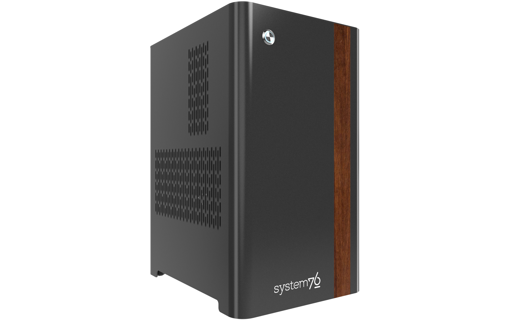

Thelio Spark (thelio-spark-r3-n3)

The System76 Thelio Spark is a desktop with the following specifications:
- Chassis
- System76 Thelio Spark chassis based on nebula40-v3
- Processor options
- Supports AMD Ryzen 8000 Series (Phoenix) CPUs
- Motherboard
- B850M Gaming X WiFi6E (rev. 1.0) running System76 Firmware (non-open)
- AMD B850 chipset
- Daughterboard
- Thelio Io board running open-source firmware
- Graphics options
- Up to one dedicated GPU
- Primary GPU slot:
- PCIe 4.0 x8
- Up to 4-slot height
- Primary GPU slot:
- GPU size:
- Internal clearance: 358mm
- Recommended maximum length: 348mm
- Tested with the following GPUs:
- Integrated Graphics
- 1x HDMI 2.1
- 2x DisplayPort 1.4
- NVIDIA GeForce RTX 5050
- 1x HDMI 2.1b
- 3x DisplayPort 2.1b
- Integrated Graphics
- Up to one dedicated GPU
- Expansion
- 1x PCIe 4.0 x8 (primary GPU slot)
- Fits physical x16 cards, runs at x8 bandwidth
- 1x PCIe 3.0 x4
- Fits physical x16 cards, runs at x4 bandwidth
- 1x PCIe 4.0 x8 (primary GPU slot)
- Memory
- Up to 64 (2x32GB) dual-channel DDR5 DIMMs @ 5600 MHz
- User-expandable up to 192GB (4x48GB)
- 4-slot configurations run at 3600 MHz
- User-expandable up to 192GB (4x48GB)
- Tested with the following RAM modules (may ship with other tested modules):
- Crucial CT32G56C46U5 (32GB/stick @ 5600 MHz)
- Crucial CT16G56C46U5 (16GB/stick @ 5600 MHz)
- Up to 64 (2x32GB) dual-channel DDR5 DIMMs @ 5600 MHz
- Networking
- 1x 2.5-Gigabit Ethernet (Intel I219-V)
- 1x M.2 PCIe wireless card (Realtek RTL8852CE)
- WiFi 6E
- Bluetooth 5.3
- Power
- C13 power cord
- 650W PSU
- Tested with the following PSU models (may ship with other tested models):
- Sound
- Back: 3.5mm line out, line in, microphone jacks
- Top: 3.5mm line out, microphone jacks
- Up to 7.1-channel audio output
- Realtek ALC897 audio chipset
- HDMI, DisplayPort audio
- Storage
- 1x M.2 25110/22110/2580/2280 SSD
- PCIe NVMe Gen 4
- 1x M.2 22110/2280 SSD
- PCIe NVMe Gen 4
- 2x 2.5" (15mm) SATA III
- 1x M.2 25110/22110/2580/2280 SSD
- USB
- Back ports:
- 1x USB 3.2 Gen 2 Type-C
- 1x USB 3.2 Gen 2 Type-A
- 2x USB 3.2 Gen 1 Type-A
- 4x USB 2.0 Type-A
- Front ports:
- 1x USB 3.2 Gen 1 Type-C
- 1x USB 3.2 Gen 1 Type-A
- Back ports:
- Dimensions
- 43.8cm × 24.7cm × 37.2cm